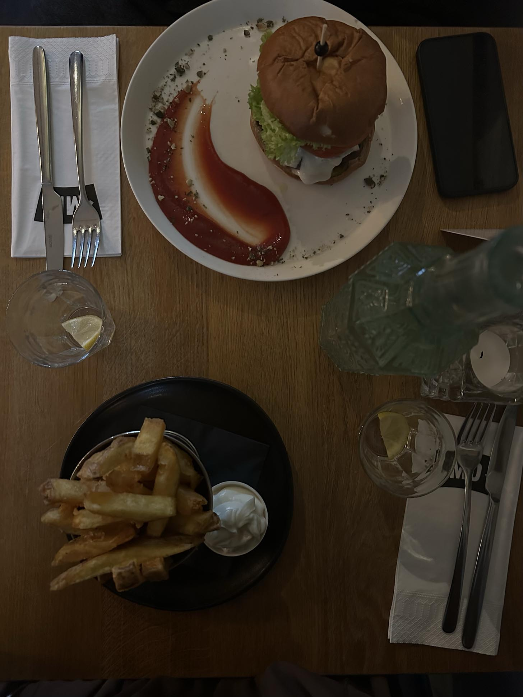

Bij Meatless District gaat het niet alleen om eten; het is een krachtig veganistisch initiatief dat de grenzen van culinair genot verlegt. Hier zijn enkele redenen waarom het ondersteunen van dit restaurant een positieve impact heeft op het milieu en de gezondheid:

Als veganistisch restaurant is Meatless District toegewijd aan het verminderen van de ecologische voetafdruk. Het serveren van 100% plantaardige gerechten draagt bij aan het verminderen van de impact op het milieu, aangezien plantaardige voeding over het algemeen minder hulpbronnen vereist dan dierlijke producten.

De keuze voor een veganistische levensstijl is niet alleen vriendelijk voor de planeet, maar ook voor je gezondheid. Meatless District biedt een scala aan voedzame, evenwichtige maaltijden zonder concessies te doen aan smaak. Van proteïnerijke plantaardige burgers tot kleurrijke seizoenssalades, het menu is ontworpen om jouw welzijn te ondersteunen.
Door te kiezen voor veganisme, nemen we verantwoordelijkheid voor onze impact op de planeet en dragen we bij aan de overgang naar een duurzamere, groenere toekomst. Het is een kleine daad van vriendelijkheid jegens de aarde die, wanneer door velen omarmd, een aanzienlijke positieve verandering teweeg kan brengen.